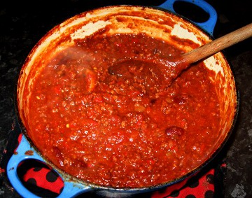

Charles Keepax's Blog
Ultimate Chilli Recipe?
It has been a little while since I have posted, apologies for that but I have been quite busy with things far too mundane to recount here. I thought perhaps I would make a post about one of my favourite meals, chilli. I hesitate to use the word recipe as I don't think my way of cooking chilli is quite as fixed as a recipe. I would describe it as more of a chilli cooking system or philosophy. As a small disclaimer I make no claims to this being a super authentic mexican way of cooking chilli or anything to that effect, but I certainly find the results rather pleasing and hope you do as well.

Ingredients
I consider chilli to consist of a base sauce and then a careful balance of several finishing flavours. Those flavours include cumin and four other "categories": sweetness, sourness, chilli and smoke. I think the key to getting the perfect chilli is to balance these four flavours perfectly. You can use pretty much anything you have that fits into these categories, but here are some good suggestions:
- Sweet - ketchup, sugar, dark chocolate
- Sourness - limes, tabasco sauce
- Chilli - tabasco sauce, chilli powder, cayenne pepper, paprika, adobo sauce, chipotle chilli sauce
- Smoke - mesquite, adobo sauce, chipotle chilli sauce, smoked paprika, chorizo
Obviously, we need some ingredients for the base sauce as well. Now I usually make a chilli of a good size and freeze any left overs, as it freezes and reheats exceptionally well. These quantities should make a chilli that will feed 6 really hungry people or 8 mildly peckish people:
- 2 Onions
- 1 Bell Pepper
- Several chillies, adjust according to taste
- 3 Cloves of Garlic
- 300g of Minced Beef
- 2 Cans of Peeled Chopped Tomatoes
- 1 Can of Kidney Beans
- 3 Teaspoons of Mexican Oregano
- 100ml of Strong Beef Stock
Method
Fry up the onions, peppers, chillies, garlic and minced beef. The onions will need longest so add those first, as they are starting to soften/brown add the rest and cook till the mince is nicely browned. Towards the end of the frying I like to add the spices (chilli powder, cayenne pepper, paprika and ground cumin). For those of you who demand quantities, I would suggest a couple of teaspoons each of chilli powder and ground cumin, and just 1 each of cayenne pepper and paprika. But adjust to your tastes. Now you can either use ground cumin or even better get the cumin seeds and lightly toast them in a dry pan for 1-2 minutes then grind up in a mortar and pestle. If you are toasting the seeds you will only need about half quantities. Deglaze the pan with the peeled chopped tomatoes and then add the kidney beans, beef stock and mexican oregano. This forms the base sauce for the chilli, next we just need to make it super tasty.
At this stage you can add the more robust flavours, this would include all the sweet flavourings and any adobo or chipotle chilli sauce. The other flavourings are best left to later in the cooking process as they tend to lose their edge if cooked for too long.
Now you want to cook your chilli basically for as long as you have time. Simmer it on a very low heat or pop in the oven on a low heat (140C or so) and stir often enough to ensure that nothing burns. I recommend cooking for at least 30 minutes but as I said the longer the better. You may need to add a little more stock or water should the chilli dry out too much whilst cooking, but remember you do want the chilli to reduce slightly to concentrate the flavours. If I am stewing the chilli for a short time I tend to cook it with the lid off. If stewing it for a longer time I tend to cook it in the oven with the lid on, then cook uncovered on the hob for the last 20-30 minutes. In the last 15 minutes or so of cooking add the lime juice and mesquite, about 1 lime worth of juice and a teaspoon of mesquite should do it. At the end turn off the heat and stir in a good splash of tabasco sauce, to taste.
A note on cookware, if cooking a chilli quickly I will usually use a large frying pan. However, if I am slow cooking the chilli I quite like to use a large heavy sauce pan.
Serving
Personally, I like to serve with rice and/or tortillas. A side of some sour cream goes down well for those that struggle with the heat, if you have real softies at the table you can remove some chilli before adding the final tabasco sauce, but they should be mocked. A sprinkle of cheese over the top is an optional addition as well.
Finally about this "recipe", the best way to use it is to cook it several times slowly tuning the flavours to your palate. It has certainly served me well and I hope it works for you guys as well.